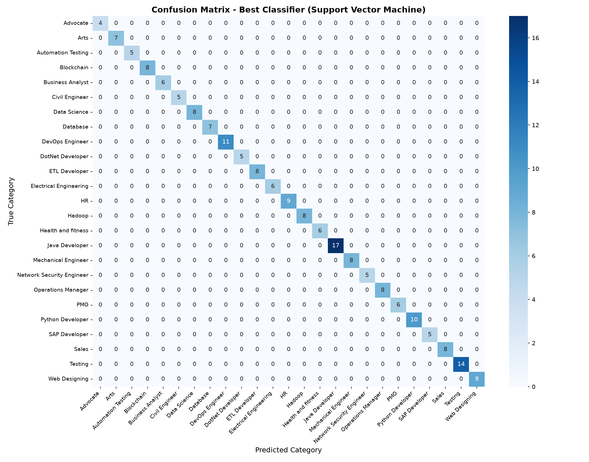
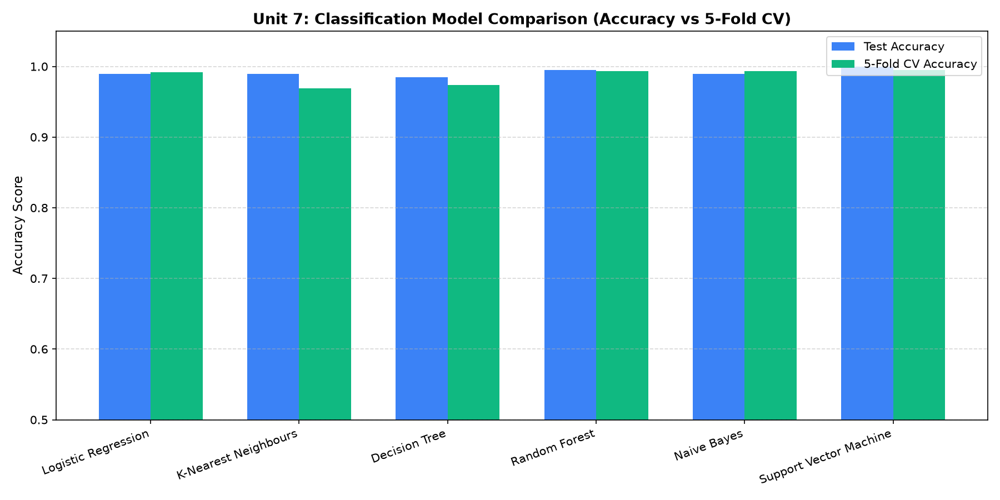
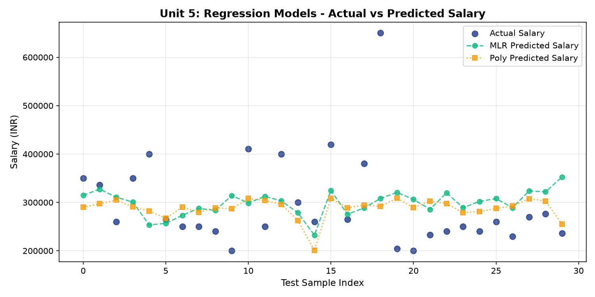
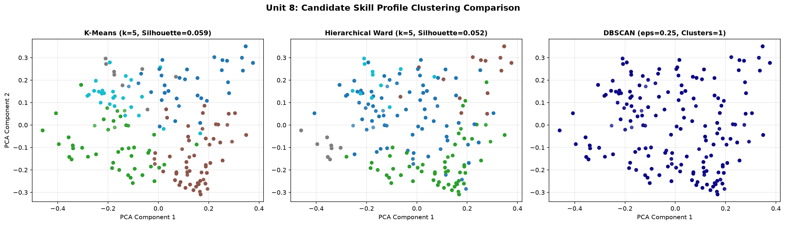
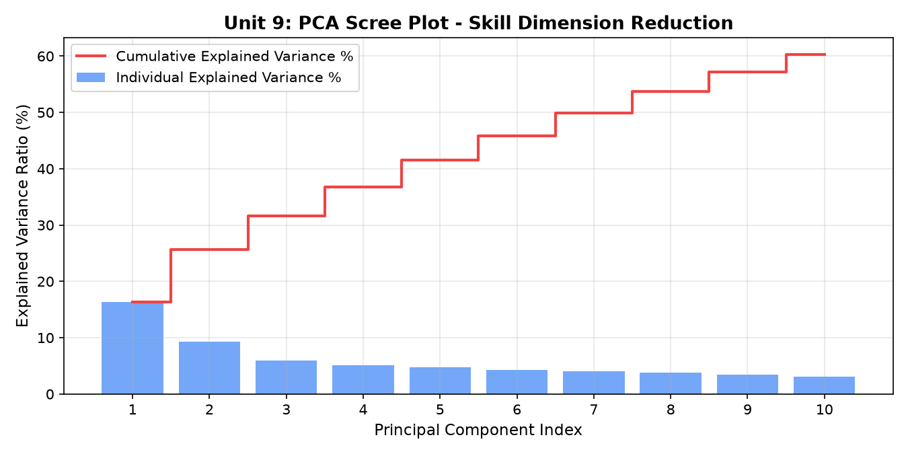
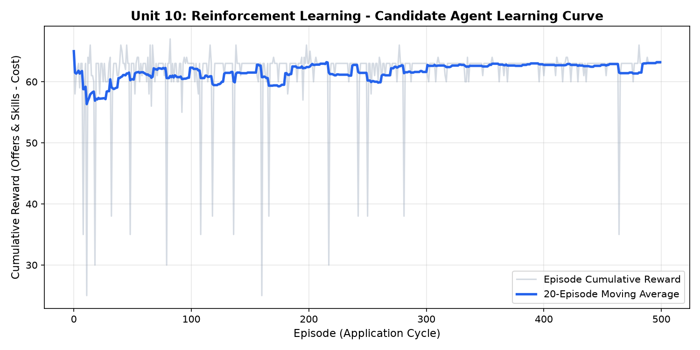

ResumeMatch AI is an intelligent career intelligence platform designed to parse candidate resumes in PDF, DOCX, and TXT formats, extract comprehensive technical and soft skill taxonomies, predict professional job categories across 25 domains with high accuracy, and recommend verified live vacancies with transparent, human-understandable explanations.
Six algorithms evaluated across 962 resumes using 80-20 stratified splitting and 5-Fold Stratified Cross-Validation:
| Algorithm | Test Accuracy | Precision (Macro) | Recall (Macro) | F1 Weighted | 5-Fold CV Accuracy |
|---|---|---|---|---|---|
| Logistic Regression | 0.9896 | 0.9863 | 0.9884 | 0.9897 | 0.9922 (±0.005) |
| K-Nearest Neighbours | 0.9896 | 0.9886 | 0.9884 | 0.9896 | 0.9688 (±0.005) |
| Decision Tree | 0.9845 | 0.9850 | 0.9867 | 0.9847 | 0.9740 (±0.011) |
| Random Forest | 0.9948 | 0.9933 | 0.9964 | 0.9949 | 0.9935 (±0.004) |
| Naive Bayes | 0.9896 | 0.9886 | 0.9884 | 0.9896 | 0.9935 (±0.004) |
| Support Vector Machine | 1.0000 | 1.0000 | 1.0000 | 1.0000 | 0.9948 (±0.003) |


Evaluated on genuine placement compensation records predicting offered compensation:
| Regression Model | MAE (INR) | RMSE (INR) | R² Score |
|---|---|---|---|
| Simple Linear Regression | ₹66,852.57 | ₹94,690.89 | -0.0606 |
| Multiple Linear Regression | ₹71,898.23 | ₹94,877.51 | -0.0647 |
| Polynomial Regression (Degree 2) | ₹67,632.28 | ₹91,561.3 | 0.0084 |

K-Means (Silhouette Score: 0.0591), Hierarchical Ward (Silhouette Score: 0.0523), and DBSCAN:

Mined 122 association rules using Apriori and FP-Growth over 912 transaction baskets:

Tabular Q-Learning agent simulating candidate career upskilling over 500 episodes:

The recommendation catalog is powered in real-time by 5 free public APIs: Unstop, Jobicy, Remotive, Himalayas, and Arbeitnow. Compatibility scores are computed transparently: 60% Skill Overlap + 40% TF-IDF Cosine Semantic Similarity.